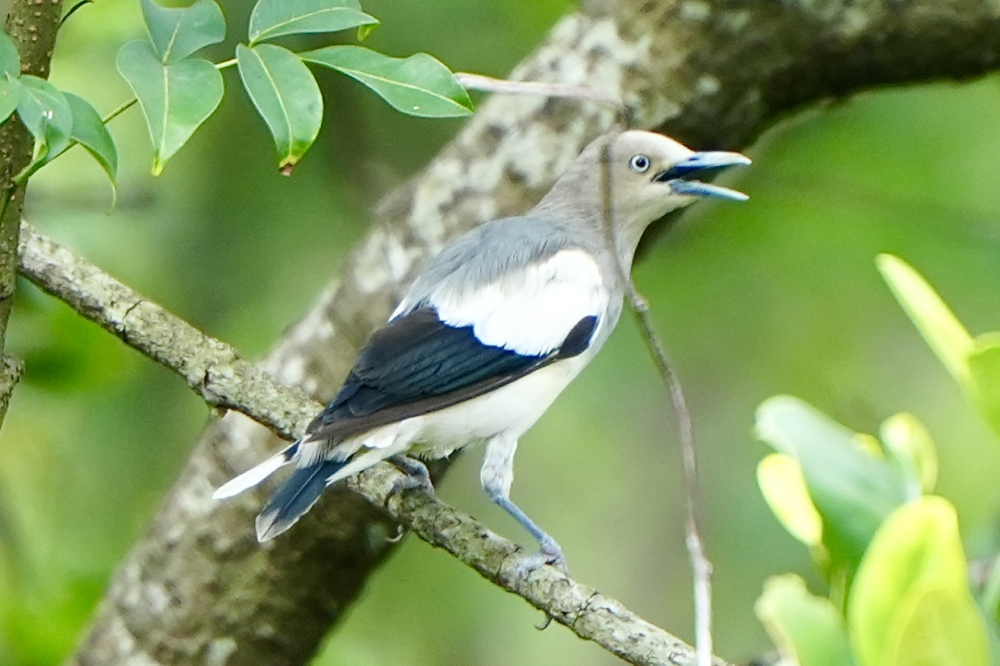

White-Shouldered Starling
Sturnia sinensis

A relatively uncommon starling, grey overall with white shoulders and pale irises. Occurs in flocks.
A relatively uncommon starling, grey overall with white shoulders and pale irises. Occurs in flocks.